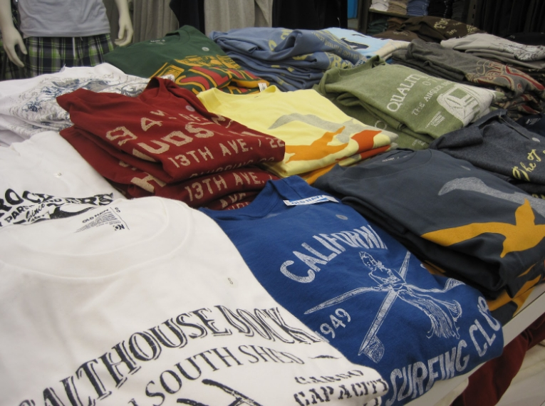
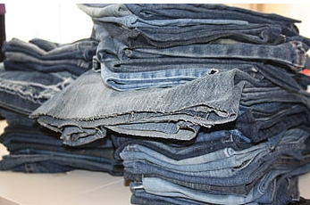
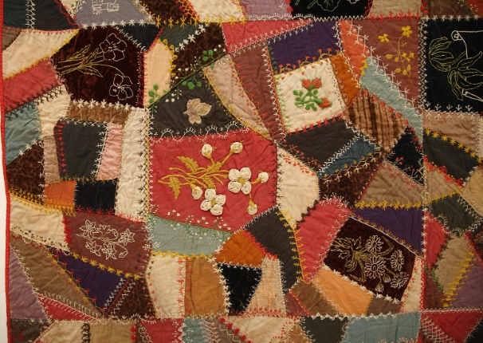
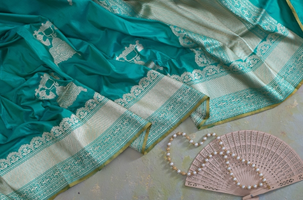
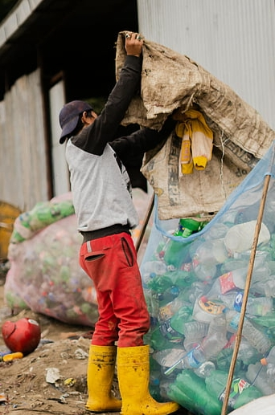
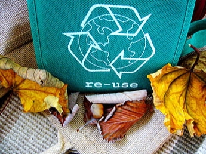
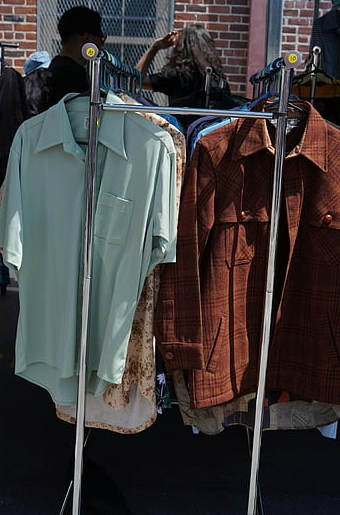

Introduction
Every year, India produces a huge amount of textile waste in the form of clothes, fabric scraps, and other materials that become old.
According to recent studies, the country generates around 7,800 kilotonnes (that is 7.8 million tonnes) of textile waste annually. Even globally, nearly 92 million tonnes of textiles end up as waste each year.
Though it is a gigantic number, only a fraction of that waste is properly reused or repurposed in the country. In India, only about 34% of textile waste is reused in which it is repaired or converted into new products.
And roughly 25% is recycled into yarns for new fabric and the rest of the textile waste ends up in landfills or is incinerated.
This is a big problem, but by taking smart and sustainable decisions, this can pose a big opportunity. Because most of us have old clothes lying around, we can transform waste into many useful items that will surely help us in our daily lives.
The fact that the ideas mentioned in this blog are not just for adults, but kids can try them too! This is not only good for the planet Earth, but can also help communities by promoting awareness, creative skills, and self-reliance.
Various methods are explained, where ideas adopted with creativity and uniqueness are enumerated. The article also demonstrates how we can reuse and repurpose used clothes and why it is important.
Sustainable Ways of Reusing Old Clothes
Here are many simple yet creative ways to give a new life to old clothes. These methods are easy enough for a student, homemaker, or community volunteer to try, and can even become small income sources if you wish.
1. Turn Old T-Shirts and Tops into Daily Use Items
Tote Bags/Cloth Bags: To make tote bags out of used T-shirts, firstly take one and cut off its sleeves. Then, stitch its bottom and also stitch the area of the cut sleeves. Then add a sleek cloth on the ends of the cloth near the collar so that you can hold the bag comfortably.
And there you go! You have a lightweight tote bag that can carry groceries, books, and anything lightweight that you can carry. It is eco-friendly and also reduces plastic use by supporting the actual purpose, that is, reducing textile waste.
Another essential item that can be made from old T-shirts and tops is pillow covers and cushion covers. Just cut the used clothing into the shape needed for the cover and simply stitch it. And that's how you can obtain neat and proper pillow covers at home without spending unnecessarily outside!
An old t-shirt can also be changed into headbands, scrunchies, and hair accessories. Tshirts with stretchy fabrics can be cut and sewn into hair bands. In this way, you can make a quick DIY activity.

Old tshirts and tops can also be used as dusting clothes by cutting them into small pieces and using them for dusting furniture, cleaning floors, windows and performing other household chores.
The fact that these minimalistic ideas promote sustainability so easily that they do not require any advanced sewing skills, either! You can sew them with your hands using a simple needle and thread.
2. Upcycle Jeans or Denim
Jeans are often made of a durable and sturdy material. Therefore, though the jeans are used and old, their cloth stays strong and suitable for further creative uses.
Kids and even adults can use old jeans to make small pouches or wallets. These look cute and can also be used to keep tiny items, coins, stationery or travel essentials.
Tote bags can also be made using old jeans, as they look fashionable and stylish.
Mats and rugs can also be made from old jeans by cutting them into strips or patches. And then you can braid or stitch them carefully. And that's how unique table mats, rugs, and coasters can be produced minimally. Things made using denim last long since the cloth is durable.
3. Transform Old Kurtis
Long kurtis or dresses that do not fit anymore can be refurbished into shorter tops or trendy summer wear.
These old kurtis can also be converted into unique skirts, depending on their fabric and design
Brightly patterned kurtis can also be stitched into cushion covers that look beautiful on your furniture and wall hangings that add an aesthetic to your plain and empty walls
4. Make Quilts and Rugs
If you have many old clothes like tshirts, shirts, kurtis, dresses, etc., you give the following sustainable ideas a try!
Cut fabric pieces in reasonable sizes from different clothes of similar material (preferably cotton), stitch them together to make a warm quilt or blanket which is great for winters or as floor bedding.
You can also cut those clothes into long strips, braid them, then stitch them into a flat mat or rug for household use.
By stuffing cut pieces of old clothes inside a fabric cover which can be made easily using an old tshirt as explained in the above ideas, floor cushions or pet bedding can be made. This reduces textile waste and also gives an extra use!
5. Repurpose Old Sarees and Dupattas
The main apparel that Indians wear are sarees, dupattas and traditional wear. And many households have used sarees lying in the corner of the closet, waste and unused. These sarees can be used to make useful things that add color and life to the ambience of the house.
The fabric of saree can be transformed into colorful curtains, table cloths or door covers to give a fresh look to a room.
Potli bags and pouches can be made out of dupattas with minimal stitching. These can be useful for gifting, storage and shopping.
Table runners and decorative drapes can also be made using these fabrics creatively to make home decor items that reflect traditional patterns and colors.
Why Reusing of old clothes Matters
High waste generation: According to Down To Earth, the country generates about 7.8 million tonnes of textile waste every year. Thus, proper recycling is essential to reduce this colossal number.
Low reuse and recycling rates: Only about one-third of textile waste gets reused and about a quarter gets recycled. The left over waste lies here and there in the landfills and remains wasted.
Environmental harm: When clothes are thrown away rather than being reused, landfills get overloaded, resources like water, electricity, dyes, etc., that are used to make those clothes go to waste and also leads to increased pollution.
Lost potential: Many clothes still have usable fabric, but due to the lack of awareness, people do not try to reuse them. Thus they are wasted.
Given these facts, reusing old clothes even in small ways in our daily life can make a real difference.
Conclusion
Old clothes lying unused in wardrobes or boxes are not worthless, they are hidden resources. With some creativity, care, and effort, we can give them a new life and purpose.
Through awareness campaigns, collection drives, and upcycling workshops, we can help reduce textile waste, support sustainable habits, and even create livelihood or skill-building opportunities for many in the form of employment.
So next time you find an old tshirt, jeans or any dress you no longer wear, don’t throw it away! Think: Could this become a bag? A cushion? A quilt? A mat? A gift?
By reusing and repurposing, we can all contribute, little by little, to a cleaner, kinder and more sustainable world.